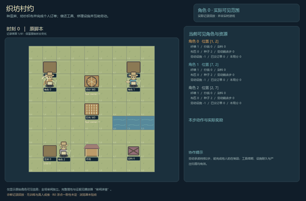
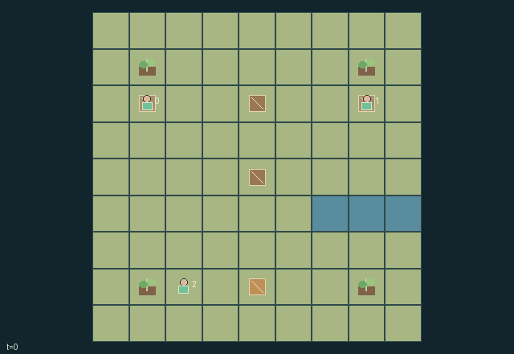

GI193 · Village Loom

Original recording scope: 角色0实际可见视角 · Mode: 实际诊断回放
Additional generated state replay (different trajectory / full-state debug)

Supply two cloth orders per villager before the fair closes. Growing flax, borrowing tools, exchanging material, repairing shared machines and committing labor all compete with private delivery deadlines.
Identity and original contract
3 independently actionable roles; 21 discrete commands per role; 64 native observation columns per role; original horizon 96 steps. Declared per-step reward range: 0 to 3. Observation regime: partially_observable.
Source SHA-256: 4ec20df24b7a26b841bd639502eb8b96fe327174700a07dba91360027cca04fb
The objective, rewards, population, map and horizon remain original. A preview is not a success claim.
Objective and gameplay
Supply two cloth orders per villager before the fair closes. Growing flax, borrowing tools, exchanging material, repairing shared machines and committing labor all compete with private delivery deadlines.
Actual adjacent tools can be lent, returned and recalled. Spinner and loom have exclusive job/output slots and depleting condition. Two-step labor promises may advance another owners job and block the helpers next action. Finite material gifts and repairs enable partners production.
- Grow flax beside your own plot, cut it with a valid sickle, and gather dye berries. Each material inventory holds at most 2.
- Reserve the spinner with 1 fiber, or the loom with 1 yarn and 1 dye while holding a valid shuttle. Each shared facility holds one job or one finished output.
- A job needs 2 labor units. Commit beside its facility to work this step and the next; while committed, only Wait is legal.
- Helpers can finish another makers reserved job. Only its owner collects the output: yarn at the spinner, cloth at the loom.
- Starting a job consumes 1 machine condition. At zero condition work stalls. Spend 1 fiber beside a machine to restore up to 2 condition, capped at 3.
- Sickle belongs to role 0 and shuttle to role 1. Owners may lend to an adjacent villager for 8 use steps. An expired tool stays physically with its holder but cannot be used by that borrower.
- Return tools beside their owners. Owners may physically reclaim them from adjacent holders, including before a loan expires.
- Give fiber, yarn or dye to an adjacent eligible villager. A handoff changes real inventories; it awards no artificial social score.
- Sell cloth beside the market. Each of two personal orders earns 3 by your private deadline, otherwise 1. The fair closes at step 80.
- Flax stalks, skeins, cloth, machine wear, busy workers and carried tools show actual state. Any legal human action sequence is accepted; scripted examples are unexecuted.
Ending: Natural completion when every villager has delivered two orders, or at step 80 when the fair closes. H=96 is a separate upper bound; natural cause has priority and is absorbing.
What this game explores
Information, sensing & communication: Who knows a fact, when it was measured, and whether it was communicated are separate state variables. Test memory or communication using only the same role-visible evidence.
Commitment, exchange & governance: Promises consume time, liquidity, access or material. Separate an announced agreement from a binding commitment and from its eventual delivery; log cancellation and expiry too.
Complementary production & service: A useful outcome requires ordered stages, scarce equipment or another role's capability. Measure real completed products and resource circulation rather than counting intermediate actions as success.
Joint transport & shared access: Positions, load geometry, occupancy and persistent access constrain whose action can succeed next. Distinguish physical handoff, shared controls and simultaneous force from a cosmetic cooperation label.
These are questions supported by rule structure, not observed learning effects.
Play it: operating walkthrough
crucibles play --game gi193Keep Python running and open its printed address. Select this game, set a seed and press Create session. The game itself is always English.
Assign a role range to Host with Assign / take over, or Assign all roles. Invite a second participant with Create player invitation, then assign a disjoint subset. Every original role is available.
For every owned role choose a legal command and press Queue. Arrow keys / WASD queue a declared directional action for the current role camera when available. Space or Advance one joint step advances everyone together. Non-directional games use the selectors.
Unqueued roles use the labelled untrained uniform-legal policy. Take over or release roles before the next step without resetting. Full-state debug is privileged and permanently logged; role cameras preserve permissions. Close the session to retain logs. Server restart does not restore sessions.
Complete command reference
IDs and English labels exactly match the manifest. Availability depends on role, resources, location and phase. An available action can still have no productive effect.
0·Wait; committed labor advances automatically
1·Walk north
2·Walk east
3·Walk south
4·Walk west
5·Sow own adjacent flax plot
6·Cut own ripe flax using valid sickle
7·Gather adjacent dye berries
8·Reserve spinning job: 1 fiber
9·Reserve weaving job: 1 yarn, 1 dye, valid shuttle
10·Commit 2 work steps at adjacent active facility
11·Collect own completed workshop output
12·Repair adjacent facility: 1 fiber adds up to 2 condition
13·Lend owned sickle to adjacent lowest-index villager
14·Lend owned shuttle to adjacent lowest-index villager
15·Return borrowed tools to adjacent owners
16·Physically reclaim owned tools from adjacent holders
17·Give 1 fiber to eligible adjacent lowest-index villager
18·Give 1 yarn to eligible adjacent lowest-index villager
19·Give 1 dye to eligible adjacent lowest-index villager
20·Sell 1 cloth beside market for private order
Roles and capability identifiers
These original role names describe capabilities, not interchangeable skins. Check each owned role's legal selector before planning handoffs.
agent_0·Western flax grower and sickle owner
agent_1·Eastern weaver and shuttle owner
agent_2·Southern dyer and gardener
Information and observation permissions
Map, positions, materials, plots, machine condition, job reservation, output, labor and tool loans are public. A role alone knows its private early-delivery deadline. Tool owners are fixed common knowledge 0 for sickle and 1 for shuttle.
The GIF is full-state debug and may reveal hidden entities or private state. Train on obs[agent], not the picture, state tree or another role's private row. Field slices and visibility are in the original manifest.
Reinforcement-learning integration
import jax
from crucibles_jaxmarl import make
env = make("gi193")
key = jax.random.PRNGKey(0)
key, rk, ak, sk = jax.random.split(key, 4)
obs, state = jax.jit(env.reset)(rk)
actions = env.sample_actions(ak, state)
obs, state, rewards, dones, info = jax.jit(env.step_env)(sk, state, actions)
done = dones["__all__"]Observations are float32 vectors of width 64; actions are scalar int32; masks have 21 entries. Supply all 3 roles each transition. Masked sampling is an engineering reference, not a trained learner.
step_env retains terminal data without reset. step performs outer autoreset and keeps terminal data in info["raw_state"] and info["raw_observation"]. Use dones["__all__"] for episode boundaries; separate completion, failure and time limit in analysis.
JIT or vmap equal identities and shapes. Split independent reset, policy and transition keys. Group different shapes explicitly; do not shrink the population or horizon. Host rendering stays outside training.
Training questions and fair evaluation
Define valid completion from the objective before fitting. Preserve original rewards and also report real deliveries/services, losses, resource state, unresolved episodes and per-role returns. Animation is not a reward signal.
Who knows a fact, when it was measured, and whether it was communicated are separate state variables. Test memory or communication using only the same role-visible evidence.
Promises consume time, liquidity, access or material. Separate an announced agreement from a binding commitment and from its eventual delivery; log cancellation and expiry too.
A useful outcome requires ordered stages, scarce equipment or another role's capability. Measure real completed products and resource circulation rather than counting intermediate actions as success.
Positions, load geometry, occupancy and persistent access constrain whose action can succeed next. Distinguish physical handoff, shared controls and simultaneous force from a cosmetic cooperation label.
Compare memory, communication or centralized critics under matched actor information. Declare critic access; keep actor inputs role-filtered. Match partner/opponent distributions, masks, compute and checkpoint selection. Final tests never enter fitting or selection.
Independent training runs or source-pairing blocks are inferential units; episodes from one policy are not independent training replications. Save hashes, keys, versions, device, time and cost. Negative, zero, failed and indeterminate outcomes are valid. No trained checkpoint or target score is supplied.
Classification and evidence
Overlapping editorial labels are reading aids, not proof of novelty, difficulty, strategic equivalence or learning effects.
- Information, sensing & communication
- Evidence
manifest.task.objective: Supply two cloth orders per villager before the fair closes. Growing flax, borrowing tools, exchanging material, repairing shared machines and committing labor all compete with private delivery deadlines.
- Evidence
manifest.task.observation_access: Map, positions, materials, plots, machine condition, job reservation, output, labor and tool loans are public. A role alone knows its private early-delivery deadline. Tool owners are fixed common knowledge 0 for sickle and 1 for shuttle.
- Evidence
manifest.actions.20: Sell 1 cloth beside market for private order
- Commitment, exchange & governance
- Evidence
manifest.task.objective: Supply two cloth orders per villager before the fair closes. Growing flax, borrowing tools, exchanging material, repairing shared machines and committing labor all compete with private delivery deadlines.
- Evidence
manifest.task.observation_access: Map, positions, materials, plots, machine condition, job reservation, output, labor and tool loans are public. A role alone knows its private early-delivery deadline. Tool owners are fixed common knowledge 0 for sickle and 1 for shuttle.
- Evidence
manifest.actions.0: Wait; committed labor advances automatically
- Complementary production & service
- Evidence
manifest.task.objective: Supply two cloth orders per villager before the fair closes. Growing flax, borrowing tools, exchanging material, repairing shared machines and committing labor all compete with private delivery deadlines.
- Evidence
manifest.task.interaction: Actual adjacent tools can be lent, returned and recalled. Spinner and loom have exclusive job/output slots and depleting condition. Two-step labor promises may advance another owners job and block the helpers next action. Finite material gifts and repairs enable partners production.
- Evidence
manifest.actions.12: Repair adjacent facility: 1 fiber adds up to 2 condition
- Joint transport & shared access
- Evidence
manifest.task.objective: Supply two cloth orders per villager before the fair closes. Growing flax, borrowing tools, exchanging material, repairing shared machines and committing labor all compete with private delivery deadlines.
- Evidence
manifest.task.observation_access: Map, positions, materials, plots, machine condition, job reservation, output, labor and tool loans are public. A role alone knows its private early-delivery deadline. Tool owners are fixed common knowledge 0 for sickle and 1 for shuttle.
Source, receipts and preview limits
The additional generated state GIF replays saved untrained legal actions through the original kernel. At most 25 actual endpoints include initial and terminal state; no invented interpolation. It is full-state debug, not the role observation. Where an original scene preview exists, it is displayed first with its own recorded information scope. The two recordings may use different trajectories and views.
Original source, observation slices, manifest and mechanism
Native receipt · Presentation receipt
Engineering passes do not establish learning. Nonzero floating differences remain recorded and undetermined; no new tolerance was introduced. Human scores remain unverified.